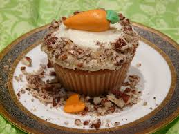

Home
Carrot Cake with Cream Cheese Icing

Description
This recipe was altered by my mom, who originally got it from a cookbook called "The Happy Baker" by Erin Bolger
My mom made some key changes! This is the recipe for the best cupcakes you'll ever try (That's a promise!!)
Ingredients - Cake
- 2 cups Flour
- 2 tsp Baking Powder
- 1 1/2 tsp Baking Soda
- 1 tsp Salt
- 2 tsp Cinnamon
- 2 cups Sugar
- 1 cup Vegetable Oil
- 4 Eggs
- 1/2 tsp Vanilla
- 2 cups Finely grated carrots
- 1 can(398ml) Crushed pineapple, with juice
- 1/2 cup Chopped Walnuts
- 1/2 cup Chopped Pecans
- 1 cup Shredded coconut (toasted)
Directions - Cake
- Preheat oven to 350F
- Grease and flour 2 9-inch round cake pans
- In a large mixing bowl sift together flour, baking powder, baking soda, salt and cinnamon
- Add sugar, oil and eggs and mix together for about 3 minutes with a hand mixer.
- Stir in carrots, pineapple, chopped nuts, and coconut.
- our into prepared pans. Bake in preheated oven for about 35 minutes or until center is set. When you insert a toothpick and it comes out clean.
- Remove from oven and let it cool for about 10 minutes. Then transfer to cooling racks to continue cooling.
Ingredients - Cream Cheese Icing
- 1/2 cup Butter, unsalted, softened
- 8 oz Package cream cheese, softenedBaking Powder
- 2 cups Icing Sugar
- 1 tsp Vanilla
- 1/3 cup Shredded coconut, toasted
Directions - Cream Cheese Icing
- Cream together the butter and cream cheese.
- Add vanilla.
- Stir in the icing sugar.
- Spread evenly on the top of the first layer.
- Add the second layer and spread evenly all over the cake.
- Sprinkle top and sides with toastee coconut.
- Refrigerate.